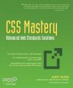

- Yahoo'nun javascript kütüphanesi YUI'nin 2.4.0 sürümü çıkmış. Yeni CSS seçici sistemi, Grafik yönetimi, JSON yönetimi göze çarpan yeni özellikler. Bağlantı
- Ücretsiz CSS ile yapılmış Site Şablonları sunan bir site açılmış. Bağlantı
- jQuery ile yapılmış 240 uygulama. Bağlantı
- Microsoft Laboratuarı Volta adlı .net web geliştirme aracını duyurdu ...
05 Aralık 2007 Web'den Seçme Haberler
- Hangi Yazı tipi formatını seçmeliyiz. Bağlantı
- Örnek kullanıma hazır css ile yapılmış oval butonlar. Bağlantı
- Ziyaret edilmiş linklerin kenarına işaret koymak. Bağlantı
- Güzel bir CSS ile yapılmış resimli menü örneği. Bağlantı
- İyi bir javascript kod yazarı olmak isteyenlere ipuçları Bağlantı
- Güzel ve kullanışlı takvim uygulamaları. Bağlantı
- 2007'nin en iyi ...
CSS Mastery: Advanced Web Standards Solutions - Andy Budd

CSS kodlaması yapan herkese lazım olan bilgileri içeren gerçekten güzel bir kitap. Bu kitaba bir çok makalede değindim. Ama ayrıca bir bilgi vermek istedim. Kitap yeni başlayanlardan ziyade CSS konusunda biraz mürekkep yalamış arkadaşalr için çok güzel bir kaynak. Bir çok yeni metodun anlatımı mevcut kitap içinde. Kitabın ingilizce olması ...
devamını oku01 Aralık 2007 Web'den Seçme Haberler
- CSS ve Javascript birleşimi ile oluşturulmuş bir css kütüphanesi CSS.js Programlanabilir CSS, tarayıcı uyumsuzluklarının giderilmesi ve özel CSS özelliklerinin kullanımına izin vermesi gibi güzel özellikleri barındırıyor. Bağlantı
- Nintendo yeni sitesini açmış. Siteye Dojo, Mootools vd. javascript kütüphaneler ile güzel bir işlevsellik kazandırılmış. Bağlantı
- web tasarımcılarına öneriler, bir sunum tadında ...
28 Kasım 2007 Web'den Seçme Haberler
- VS.net 2008 ve .net Framework 3.5 hakkında güzel bir yazı. Bağlantı
- IFrame sunucu taraflı(asp.net) kullanmak. Bağlantı
- .net'in şablonları(masterpage) en iyi kullanmayı anlatan bir makale. Bağlantı
- En iyi yazı tipi ve satır yüksekliğini seçmeyi anlatan güzel bir makale. Bağlantı
- Çok güzel ve farklı bir resim ...
19 Kasım 2007 Web'den Seçme Haberler
- .Net 3.5 çıkıyor. Mehmet N. Çankaya bize .net3.5 posterini sunmuş. Bağlantı
- 21 adet güzel tablo uygulaması. Bağlantı
- Mac deki resim galerisine benzer güzel bir slidshow uygulaması. Bağlantı
- eval() fonksiyonunu kullanmadan Ajax uygulamalarında Json kullanmak. Bağlantı
- Javascript kütüphanelerinin listesi. Bağlantı
- Firefox 3'den iyi haberler gelmeye devam ediyor. Firefox ...
14 Kasım 2007 Web'den Seçme Haberler
- Google PageRank değerlendirmesini 1 Ocak itibari ile kapatacakmış. Bağlantı
- SmashMagazine neredeyse tüm konularını buraya taşıyorum. Bunu hak ediyorlar bence. Bu seferde sitelerdeki üst alandaki resimleri irdelemişler. Bağlantı
- MSNBC yeni sitesi üzerine bir makale. Bağlantı
- Mehmet Doğan günlüğüne son yazısını yazmış. Üzülmemek elde değil :( Bağlantı
- Sosyal imleme sitesi webiket.net bir ...
Alıntı: blockquote ve q etiketleri
W3C bir çok durum için çeşitli etiketler üretmiştir ve bu etiketlerin kullanılmasını önerir. Alıntıda böyle bir etikete sahiptir(<blockquote> ve <q>). Ancak kod yazarlarını bu etiketleri kullanmaktan alı koyan bu etiketlerin başlangıçtaki görünümünün çok güzel olmamasıdır, tabi farklı etiketlerle uğraşmak istemeyenlerde vardır. İşte bizde burada hem w3c'nin dediğini yapıp ...
devamını oku11 Kasım 2007 Web'den Seçme Haberler
- CSS ile yapılmış parlak yatay menü örnekleri Bağlantı
- Birden fazla sınıf ataması hakkında güzel bir çalışma. Bağlantı
- Paypal'ın yeni sitesi üzerine değerlendirme yazısı. Bağlantı
- MooTools javascript kütüphanesi ile yapılmış güzel bir takvim uygulaması. Bağlantı
- PHP ve CSS ile dinamik metin yerine resim koyma metodu. Bağlantı
- Asp.net projelerinizde tablo ...
Vista'da Adobe Flash sorununun çözülmesi
Vista'ya alışmadığımı itiraf etmeliyim. Bu gün birden IE7 flash dosyalarını göstermemeye başladı. Gittim adobe'un sitesine ve flash player'ı tekrar indirdim. Kurulum tamam dedi ancak IE7 hala bazı sayfalarda flash dosyalarını göstermiyor. Neyse sorunun çözümü C:WindowsSystem32MacromedFlash IE7 kapattıktan sonra klasörüne gidip FlashUtil9b.exe çalıştırmaktan geçiyor. Çalıştırınca kendini ...
devamını oku